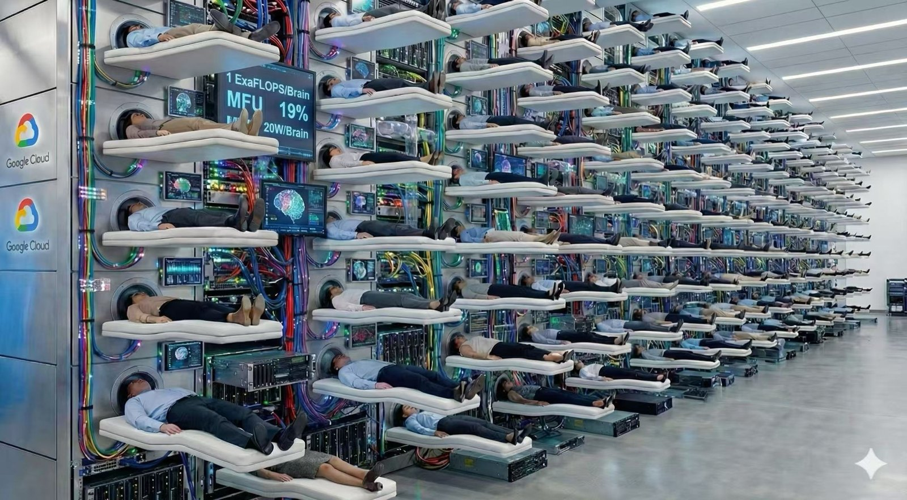

One complete story, in chronological order: how a chain got cut, what the cut left unpaid, how four groups paid it four ways, and why it all ended back at the fixed-size notepad. Many figures, few words, plain language.
This lecture has instructor notes.
They cover how to teach it: each segment's goal, where to pause, common misconceptions, likely questions. The content itself is this page.
Two uses. Presenting: teach from them; lines, figure cues and timing are written out. Self-study: give the notes to an AI and get a TA who knows the lecture and how to teach it; let it walk you through.

⛔⛔ Minute one: audit these numbers.
⭐⭐ Read every number in this lecture this way.
⭐⭐⭐ The main line:
The RNN road thinks like a brain, the Transformer one like a machine.
One saves power and space, one is fast and parallel:
the human–machine difference.
In 2020, GPT-3 could hold only 2048 tokens at a time. Then it was a good autocomplete: give it a passage, it continued plausibly.
Work has changed: read a whole codebase to fix one bug, chain dozens of tool calls in one go, remember you changed your mind half an hour ago. 2K can't hold even one file.
⭐⭐ Context length is the model's working memory.
Can't remember, can't do anything.
⛔ Every bit of memory costs real HBM.
Each new token looks back at all earlier ones, so their K and V are kept, not recomputed.
That pile is the KV cache, growing linearly with context.
⭐ Attention's six-year evolution had one goal: make memory affordable.
DeepSeek-V3 (671B, 61 layers, 128 attention heads, head_dim 128),
128K context, a single user, stored in bf16.
Same shape, four attention variants: KV cache size for each?
Pick each row independently.
488 / 30.5 / 3.8 / 8.6 GiB.
One formula: how many numbers each token leaves behind per layer,
× 61 layers × 2 bytes × 131,072 tokens.
MHA = 2×128×128 = 32,768 → 488 GiB; GQA-8 = 2×8×128 = 2,048 → 30.5 (16×); MQA = 2×1×128 = 256 → 3.8 (128×); MLA = latent 512 + RoPE 64 = 576 → 8.6 (56.9×).
⭐⭐ How big is 488 GiB? With Topic 2's allocatable capacity
(94.74 GiB/device), 488 ÷ 94.74 =
5.2 devices, or about 2.6 v7 chips.
One user, one prompt: 2.6 chips' HBM, all KV,
before any weights load.
📌 RoPE (rotary position embedding).
“Who comes first” isn't its job. That's free from the causal mask:
each position sees only its left, so a few layers can count its predecessors
(NoPE, arXiv 2305.19466, NeurIPS 2023,
showed decoder-only models learn order with no explicit positional encoding).
⭐ What RoPE adds: “how far apart are we?”
It turns each position's Q and K by a position-set angle; the dot product subtracts the absolute angles,
so relative distance lands in the score. Zero parameters, every layer,
no stacking needed.
⭐ Q and K only, never V. §5 covers its trouble for MLA:
the 64 extra dims above pay for it.
⭐⭐ The real point: (c) vs. (d):
MQA needs just 3.8 GiB, 2.25× less than MLA's 8.6.
MLA isn't the most frugal.
⭐ So this branch never chased “store the least”:
MQA hit that floor in 2019, paying with a big quality drop.
The real contest: capability bought per byte.
Section 5 follows that thread.
⚠️ Basis: 488 GiB is a counterfactual “what if V3 used MHA”, not a V3 measurement; V3 was MLA from day one. It uses the V3 paper's comparison-table convention (K, V both head_dim=128); V3's real K is 128+64=192 dims per head, so a strict baseline is slightly larger.
Last lecture's yardstick: compute ÷ bandwidth,
operations per byte moved from memory.
On TPU v7, what is it at each level? Pick each row independently.
(a) About 313. (b) An order below HBM: in the tens.
(a) = 2,307 TFLOP/s ÷ 7.37 TB/s.
Not new: Topic 2 spent a whole section on this ridge point.
⭐ Flipping (b) means mixing up “faster” and “higher bar”: on-chip is faster: bigger denominator, same numerator, so the quotient can only shrink. Closer to compute, lower line. Lower bar: an op moved on-chip goes compute-bound sooner.
⛔ Why (b) gets a magnitude, not a number, is the main lesson:
VMEM bandwidth is officially unpublished.
Bandwidth = compute ÷ ridge point, so an exact ridge point
would back-derive it. We stop at “in the tens”, no guessing.
⭐ It's one of Topic 2 §6's four questions:
ask a number's source and basis before using it.
Aim them at your own material first, not others'.
⭐ What really happened: four branches, each fixing its own flaw.
⭐ Remember how this looks now. In the last section, you'll scroll back.
⭐ This section teaches nothing new; it's just a map, so it sits outside the numbered lessons as Section 0. Its one job: a place to return to at the end.
⭐ The concrete numbers: read the columns first; rows can wait. Cheap layers per cycle, context length, KV cache size: by the end you'll read every row.
📌 Sourcing rules for this table (⭐ added 2026-09-13; the table's conclusions all rest on them)
config.json).max_position_embeddings. ⚠️ That is capacity, not capability: a declared 10M isn't a usable 10M.⚠️ For any row with context < 128K, the KV cell is counterfactual (shape computed at 128K). That includes GPT-3, numerator of the “846×”; its real context is only 2K. The ratio shows magnitude; don't cite it.
⭐ Click a header to sort: time / vendor / cheap-layer share / context / KV; again to reverse. Default: time. Both modes sort all 44 rows.
| Date | Model by vendor | One cycle 1 cell = 1 layer | Context declared | KV cache @128K | Notes |
|---|---|---|---|---|---|
| 2020-05 | GPT-3 175B dense · 96 layers | MHA, every layer | 2K | 576 GiB (needs 10 bars) | Baseline: KV grows with head count, no savingsThe start. Every later saving is measured against this 576 GiB |
| 2022-04 | PaLM 540B dense · 118 layers | MQA, every layer | 2K | 15 GiB | 48 heads share 1 KV group: first large-scale KV cutMQA: first to cut KV down to a single group |
| 2023-02 | Llama 1 65B dense · 80 layers | MHA, every layer | 2K | 320 GiB (needs 6 bars) | Still pure MHA; GQA comes next gen |
| 2023-07 | Llama 2 70B dense · 80 layers | GQA, every layer | 4K | 40 GiB | MQA's cut hurt quality; GQA compromises (arXiv 2305.13245)GQA: 1 group too harsh; the compromise became the default |
| 2023-09 | Mistral 7B 7B dense · 32 layers | SWA, every layer | 32K | 512 MiB | ⭐ SWA's mainstream debut, window 4096SWA: where “don't read everything” starts; window 4096 |
| 2024-03 | Jamba 52B/12B · 32 layers | MambaMambaMambaMambaMambaMambaMambaGQA | 256K | 2.0 GiB | ⭐⭐ Inter-layer hybrids go open, 10 months before MiniMax-01First open inter-layer hybrid, 7:1, 10 months before MiniMax-01 |
| 2024-05 | DeepSeek-V2 236B/21B · 60 layers | MLA, every layer | 128K | 8.4 GiB | Low-rank compression. KV down 93.3% = just 2.25 GQA groupsMLA debut. New idea: keep heads, store a compressed latent |
| 2024-06 | Gemma 2 27B 27B dense · 46 layers | SWAFULL | 8K | 24 GiB | ⭐ Google starts alternating: 1:1, window 4096 |
| 2024-07 | Llama 3.1 405B dense · 126 layers | GQA, every layer | 128K | 63 GiB (needs 2 bars) | ⛔ The cost of brute-forcing 128K with no tricks: more than Llama 2 |
| 2024-11 | Hunyuan-Large 389B/52B · 64 layers | GQA, every layer | 128K | 10 GiB | ⭐ CLA: every 2 layers share one KV, knob ①'s third trick |
| 2024-12 | DeepSeek-V3 671B/37B · 61 layers | MLA, every layer | 160K | 8.6 GiB | ⭐ Topic 1's anchor. One layer more than V2, nearly the same KVSame as V2, 2.8× the params, KV only 1.7% apart: KV decoupled |
| 2025-01 | MiniMax-01 456B/45.9B · 80 layers | LTNLTNLTNLTNLTNLTNLTNGQA | 4M | 5.0 GiB | ⭐ First linear flagship. Train 1M, extrapolate 4M; config 10M = capacityFirst linear at hundreds of billions of params, also 7:1 |
| 2025-03 | Gemma 3 27B 27B dense · 62 layers | SWASWASWASWASWAFULL | 128K | 10 GiB | ⭐⭐ 5:1, window 1024: Xiaomi's 5:1 wasn't the firstSWA hybrid settles: 5 window : 1 global; window shrinks to 1024 |
| 2025-03 | RWKV-7 Goose 0.19B–2.9B · pure RNN | RWKV, every layer | Unbounded (theory) | 0 (no KV) | ⭐ Only zero-KV row: constant memory, constant per-token timeThe other extreme: pure RNN, KV cache literally 0 |
| 2025-04 | Llama 4 Scout 109B/17B · 48 layers | SWASWASWAFULL | 10M | 7.1 GiB | Chunked local 8192 + NoPE global. ⚠️ Claims 10M: another capacity figure |
| 2025-04 | Qwen3-235B-A22B 235B/22B · 94 layers | GQA, every layer | 40K | 24 GiB | ⭐ Qwen's last gen before going linear: pure GQA-4 |
| 2025-07 | Kimi K2 1T/32B · 61 layers | MLA, every layer | 128K | 8.6 GiB | ⭐ Kimi before KDA: pure MLA, architecture name literally DeepseekV3 |
| 2025-07 | GLM-4.5 355B/32B · 92 layers | GQA, every layer | 128K | 46 GiB | ⭐⭐ Zhipu before DSA: 46 GiB → GLM-5's 11, 4× less |
| 2025-08 | gpt-oss-120b 117B/5.1B · 36 layers | SWAFULL | 128K | 4.5 GiB | ⭐ OpenAI's first open-weights model: 1:1 alternating, window 128 + sink |
| 2025-09 | DeepSeek-V3.2-Exp 671B/37B · 61 layers | DSA, every layer | 160K | 8.6 GiB | ⭐ Sparse begins: V3 + lightning indexer. ⛔ KV same as V3DSA: in-layer sparsity; same layers, each reads a subset of tokens |
| 2025-09 | Qwen3-Next 80B/3B · 48 layers | GDNGDNGDNgAT | 256K | 3.0 GiB | 36 linear + 12 full attention (GQA-2, head dim 256)GDN: a direct Mamba descendant enters mainstream LLMs |
| 2025-10 | Ling-1T (Ling 2.0) 1T/50B · 80 layers | GQA, every layer | 32K | 40 GiB | ⭐⭐ Ling 2.6 was converted from it: 40 GiB → 1.4 GiB |
| 2025-10 | MiniMax-M2 230B/10B · 62 layers | GQA, every layer | 192K | 31 GiB | ⛔ “Back to full attention” ≠ no change: GQA-8 + partial RoPECounterexample: back to full. Proves “full” is knob ③, not ① |
| 2025-10 | Kimi Linear 48B/3B · 27 layers | KDAKDAKDAMLA | 1M | 1008 MiB | 20 KDA + 7 MLA (last layer forced full). Already NoPEKDA: next-gen linear, paired with NoPE MLA |
| 2025-12 | DeepSeek-V3.2 671B/37B · 61 layers | DSA, every layer | 160K | 8.6 GiB | Exp goes GA. index_topk 512 → 2048, KV same as V3Exp goes GA: sparse reaches production, top-k 512 → 2048 |
| 2025-12 | Mistral Large 3 675B/41B · 61 layers | MLA, every layer | 288K | 8.6 GiB | ⭐ MLA hyperparams = V3's, field by field; from params.jsonMLA goes West: Europe's largest open model clones V3's MLA |
| 2026-01 | Xiaomi MiMo-V2-Flash 309B/15B · 48 layers | SWASWASWASWASWAFULL | 256K | 5.0 GiB | Window 128. Model card claims nearly 6× KV saving, matching 48÷8 exactly |
| 2026-02 | GLM-5 744B/40B · 78 layers | DSA, every layer | 198K | 11 GiB | MLA + DSA. GLM-5.1 same architecture, only post-training differs |
| 2026-02 | MiniMax-M2.5 230B/10B · 62 layers | GQA, every layer | 192K | 31 GiB | ⚠️ Architecture identical to M2, field by field; sparse waits for M3 |
| 2026-03 | Qwen3.5 397B/17B · 60 layers | GDNGDNGDNgAT | 256K | 3.8 GiB | 45 linear + 15 full (config: full_attention_interval 4)Qwen3-Next's hybrid attention enters Qwen's main line |
| 2026-04 | Xiaomi MiMo-V2.5-Pro 1.02T/42B · 70 layers | SWASWASWASWASWASWAFULL | 1M | 6.3 GiB | 60 SWA + 10 full, window 128: the leanest at the 1M tier |
| 2026-04 | DeepSeek-V4-Pro 1.6T/49B · 61 layers | HCAHCACSAHCACSA | 1M | 999 MiB | ⛔ Unlike Flash: first two layers are HCA. 1.6T, yet KV under 1 GiB |
| 2026-04 | Ling-2.6-1T 1T/63B · 80 layers | LTNLTNLTNLTNLTNLTNLTNMLA | 256K | 1.4 GiB | ⛔ Not KDA; reasoning model Ring-2.6-1T has identical architecture |
| 2026-04 | Gemma 4 31B 31B dense · 60 layers | SWASWASWASWASWAFULL | 256K | 11 GiB | ⭐ Global layers: K dim doubled + shared K=V, window 1024Knob ①'s new trick: global layers double K dim, then share K=V |
| 2026-05 | DeepSeek-V4-Flash 284B/13B · 43 layers | SWASWACSAHCACSAHCA | 1M | 697 MiB | ⭐ 2 SWA lead-ins; CSA/HCA alternate. MLA → shared-KV MQAEnd point. 697 MiB, 846× smaller than GPT-3, and MLA is gone |
| 2026-06 | GLM-5.2 744B/40B · 78 layers | DSA, every layer | 1M | 11 GiB | ⭐ + IndexShare: 4 layers, 1 indexer. This takes 198K → 1MIndexShare: sparse stage two; the index itself is now the cost |
| 2026-06 | MiniMax-M3 428B/23B · 60 layers | MSA, every layer | 1M | 15 GiB | ⭐⭐ GQA-4 + sparse. KV larger than MLA-based GLM-5.2 |
| 2026-07 | Kimi K3 2.8T/104B · 93 layers | KDAKDAKDAgMLA | 1M | 3.4 GiB | 69 KDA + 24 Gated MLA (last layers 92 and 93 both full) |
| 2026-07 | Hunyuan Hy3 295B/21B · 80 layers | GQA, every layer | 256K | 40 GiB | ⛔ 80 layers, all GQA-8, not a single linear layer |
| 2026-07 | Ling-3.0-flash 124B/5.1B · 42 layers | KDAKDAKDAKDAKDAgMLA | 256K | 1008 MiB | Different branch from 2.6. Same-gen tiny uses 3:1, this one 5:1; no 1T in 3.0 |
| 2026-08 | GLM-5.3 744B/40B · 78 layers | DSA, every layer | 1M | 11 GiB | ⚠️ Same base as 5.2, post-training only, architecture unchanged |
| 2026-08 | Hunyuan Hy4-preview 770B/49B · 78 layers | gDSA, every layer | 1M | 11 GiB | All 78 layers sparse + IndexCache: 1 in 4 layers indexesSkips linear: straight from pure GQA to all-layer sparse |
| 2026-08 | ⭐ GLM-5.3-Flash 320B/18B · 45 layers | KDAKDAKDADSA | 1M | 1.5 GiB | 34 KDA + 11 sparse MLA: GLM's first linear + sparse mixOnly one combining ② and ③: 34 KDA + 11 sparse MLA layers |
| 2026-08 | Qwen3.8-Flash-Next 125B/6B · 48 layers | GDNGDNGDNgAT | 256K | 3.0 GiB | ⭐ Qwen4 architecture preview; new: a 51B n-gram embedding table |
⭐ In one sentence: at the same 128K, from GPT-3's 576 GiB to DeepSeek-V4-Flash's 697 MiB, six years, 846×. No single knob did that: all three contributed.
⭐ Eight things this table shows at a glance (counts use all 44 rows, even in Highlight; a “N vendors do X” that shifts with the view isn't a conclusion)
⭐ Two views; switch at top right: Highlight (default) keeps only the rows carrying this history; notes say “why it's on this line”. All is the full reference table; notes give each row's unique point.
⭐ The lecture goes step by step, in time order. Each step answers: what did the last step leave unpaid, and what does this one pay with? Don't memorize names; track who owes what.
⚠️ Derivations, ablation tables and our v7 measurements are left out of this edition; it tells just the story.
2K = GPT-3's max_position_embeddings; 1M and 846× come from this course's model table (128K, BF16, batch 1, both ends ≥100B models)
⚠️ 512× (2K→1M) and 846× (KV reduction) are different bases, hence two lines. Multiplying them treats two rulers as one
Both charts are computed live from topic03_models.ROWS, no hardcoded numbers; green line = running best, not a fitted curve
The right chart has only ≥100B models, the 846×'s basis. Unfiltered, Mistral 7B's 512 MiB would drag the envelope down just for being small
RWKV-7's KV = 0 can't go on a log axis, so the right chart omits it
Every later term answers one problem: language is ordered, so the model must store “what was just said.” Where, how much, reread it all or not: thirty years of argument.
The 1990 answer was crudely simple: carry a box.
Read a word, mix it into the box, write it back; repeat.
What's left at the end is all the model knows.
⭐ One detail set the next thirty years: the box never grows. Ten words or 100,000, same size.
Elman 1990, “Finding Structure in Time”: context units are “copied … on a one-for-one basis, with fixed weight of 1.0”; LSTM: Hochreiter & Schmidhuber 1997; GRU: Cho et al. 2014
⛔ But “mixing” misleads: it suggests blending, which destroys. Look inside: no blending.
The two angles in Ⓑ were sampled on the spot (4,000 random vector pairs each): d=2, E|cosθ| ≈ 0.633 (≈51°; theoretical exact value 2/π ≈ 0.637); d=1024, ≈ 0.0248 (≈88.6°). The asymptote sqrt(2/(π·d)) matches to three decimals for d≥64
⛔ Ⓐ omits the RNN update rule on purpose: it would hide the picture from newcomers. ⛔ Ⓑ's right half draws no specific decay curve: the rate depends on the matrix's spectrum; no universal curve exists
Ⓐ's size table and “loop line untrained” are from Elman 1990, “Finding Structure in Time”: “Recurrent connections are fixed at 1.0 and are not subject to adjustment.” Sentence task: “hidden and context layers contained 150 nodes each,” 31 input/output nodes. Parameter counts: derived from 31/150, not in the paper; the smallest, XOR, has 2 hidden units.
⛔ The precision column is blank on purpose: papers then didn't state it; it wasn't yet a dimension to trade off. We won't invent a number
⚠️ “2017” in the takeaway band means the Q/K/V naming and the KV cache cost; scoring one query against the history and taking a weighted average was already done by 2014 attention
⭐⭐ Keep three things.
📌 ① The name: RNN = Recurrent Neural Network. The key word is recurrent.
⭐ The R is the loop line you just saw.
Once computed, the box's contents don't leave; they loop back as the next step's input.
Literally: recurrent = re- (back) + currere (to run),
“running back”.
⭐⭐ The word came from anatomy, not math: in 1901 Cajal saw recurrent semicircles in cerebellar cortex; in 1933 Lorente de Nó found recurrent, reciprocal connections. Until then the nervous system seemed purely feed-forward.
⛔ Don't confuse it with a recursive neural network. Recursive is different: it descends a parse tree; recurrent loops along the time axis. One drills down; the other circles in place.
② How big is the box? Smaller than you'd think. The figure shows the largest (150); the paper's two letter-prediction models have 20, the smallest, XOR, 2. Range: 2 to 150.
③ What precision?
The paper doesn't say, and that is part of the answer: precision wasn't yet a dimension
anyone traded off, just the machine's ordinary floating point, not a knob.
⭐ When a quantity starts appearing in papers is itself a signal:
it has become worth trading off.
④ How big when they actually worked? 150 is a toy size. The first large RNN that really worked was 2014's seq2seq: 4 layers, 1,000 cells each. The next sentence is the gem: “the deep LSTM uses 8000 real numbers to represent a sentence.”
⛔⛔ 8,000 → 262 billion (the 488 GiB from the opening, in bf16). 32.75 million times. That is the real distance between “squeezed into a blob” and “kept verbatim.”
⑤ What does each matrix extract? The answer is a bit counterintuitive.
Attention's Q / K / V anyone can explain: Q = what I seek, K = what I answer, V = what I give if matched.
⛔ An RNN has no such split, not by oversight: the design never splits roles. The input matrix writes content that doubles as its lookup cue; the recurrent matrix keeps and transforms: both keeper and retriever.
⭐⭐⭐ Hence attention's breakthrough: it parameterized “what to store” and “how to find it” independently. In an RNN, one matrix moonlights at both.
⭐ Precisely, three tiers: an RNN state is “an unindexed blob,” a linear-attention state “an indexed memory,” a KV cache “verbatim, entry by entry.” The middle tier returns in Section 7.
⑥ What are x and y? Is it also predicting the next word?
x = the current single token's vector; h = the state after all earlier words; y = output matrix × state: a vocabulary-length vector; softmaxed, “each word's odds of being next.”
⭐⭐ So yes: it is next-token prediction. The paper says: “The task on each input cycle was to predict the … next word in the sequence.” A 1990 training objective still in use thirty-five years later.
⚠️ Word vectors back then: Elman gave each word a
31-bit vector, a single 1, random, never trained.
The paper notes: mutually orthogonal, and no part-of-speech or meaning.
⭐ What embeddings fixed: then, perfectly orthogonal, zero information;
now, learned dense vectors: only “nearly orthogonal,” but meaningful.
⑦ When did the state become 2D (a matrix state)? Much earlier than most think, and rediscovered, not invented.
In the early '90s, Schmidhuber's Fast Weight Programmers already used a matrix summed from outer products. A 2021 paper proved the two formally equivalent (arXiv 2102.11174; Schmidhuber co-authored it).
⭐⭐ The gem is in the abstract: the outer products combine “self-invented activation patterns (today called keys and values)”. Today's keys and values appeared as outer products thirty years ago.
⑧ What does “rotate” rotate? Fading memory, or making room? Both, and they are the same thing.
⛔ Don't mix these up: the loop line is fixed at 1.0, untrained; it only carries the state to the next step. What “rotates” is the 150 × 150 block: 70% of the parameters. Carrying is free; the cost is how you read it on arrival.
⭐ “Rotate” is only a third of the story. Any square matrix on a vector does three things at once: change the viewing angle → scale each axis by a different factor → rotate back. The middle step is the action.
⭐⭐ Key: it fades not uniformly but selectively, by direction. Which directions fade fast or slow: that's what the matrix really learns.
So how does “retrieval” happen? An RNN has no “retrieval” step. It hides in the multiply.
Read the matrix by rows: output i is row i dotted with h. A dot product retrieves: h superposes nearly perpendicular directions; dot it with a vector and the aligned part comes out; perpendicular ones cancel.
⭐⭐ Each row, then, is a ruler: a probe. 150 rows are 150 probes
measuring the same h at once; their 150 readings become the new h.
“Rotate” both reads the old state and rewrites what it read as the new state.
“Incorporating”? Just vector addition, far simpler: another matrix maps the word to a direction and adds it. Superposed, not overwritten: old ones intact, plus one component.
⛔ One more layer: once stacked, new and old can no longer be told apart unless some probe can separate them. That probe is a row of the matrix at the next step.
⭐⭐⭐ So it's a closed loop: the “map” block picks which direction to write, the “rotate” rows which to read, and both ends must agree on a code.
⛔ How many multiplications apart? t steps. Only a gradient across all t
tells both matrices how to align.
⭐⭐ The real reason long range is hard to learn: not “can't remember,”
but read and write can't agree on a code, worse with distance.
⭐⭐⭐ Attention's breakthrough, sharper than “it split storing from finding”:
an RNN aligns reads and writes across t steps; attention, in one step by direct dot product.
Q meets K on the spot, no multiplications in between.
It didn't learn alignment better; it cut the distance to align to zero.
📌 Conventions. “Square matrix = rotation × per-axis scaling × rotation” is the SVD, a math fact; “spectrum decides decay or explosion” is textbook vanishing gradients. ⚠️ “Align across t steps” is our phrasing, not a standard term; the analysis beneath is standard.
⭐⭐ This shape ⛔ dies in Section 2,
and in Section 7 returns unchanged.
Only after the full loop do we see it discarded a treasure.
One upside still tempts: at any length, each step moves the same data. Cost ignores length.
The downside, same sentence: only one box. Word three waits for word two; 10,000 words, 10,000 rounds in a row.
Merely slow? It hurts on hardware: each round reloads all weights from HBM for a sliver of work.
NVIDIA, “Recurrent Layers User's Guide”: “a GEMM with one dimension of one,” “can combine these GEMMs over the minibatch size, but not over different sequence steps”; Vaswani et al. 2017 (arXiv 1706.03762), Introduction
⭐ That 313 isn't new: Topic 2 spent a section on this ridge point: 313 operations per byte from HBM.
⛔ Not “RNNs are a bit slow”: a very expensive machine spends most of its time waiting on data.
📌 People did try.
If reloading weights is the disease, don't reload: pin the weights on chip across steps. That's persistent RNN, Baidu Silicon Valley AI Lab, 2016.
⭐ Remember it: it wins again. Six years on, another op got the same rule: “keep intermediates out of HBM.” That's FlashAttention, Section 9.
⛔ It couldn't save the RNN: only so much fits on chip, and it cured “slow to load,” not “must queue”.
Pain one: slow. The other two hurt more: the model truly can't learn.
Bengio, Simard, Frasconi 1994 (vanishing gradients); Hochreiter & Schmidhuber 1997 (LSTM); Bahdanau et al. 2014 (arXiv 1409.0473), “a fixed-length vector is a bottleneck”
Vaswani et al. 2017 (arXiv 1706.03762), Table 1; Martin & Cundy 2018 (arXiv 1709.04057): nonlinearity blocks parallelism; linear alone allows parallel scan
Keep two sentences.
① Upside: per-step data ignores length.
② Downside: one box, so one step at a time; and no room for a long passage.
⭐ The next section's cut targets ②.
⛔ But it throws out ① too.
The remaining eight sections pay for losing ①.
⭐⭐ But first: if the “look back” add-on works so well, why not drop the RNN and keep only it?
Section 1 ended on a question. In 2017 someone did it; the paper's title says so.
⛔ Attention wasn't invented in 2017.
It dates to 2014, a small add-on bolted onto an RNN.
⭐ So the 2017 cut didn't invent attention; it threw away the chain and kept the add-on.
Nobody dreamed attention up; it grew from complaints, each version faulting the last: “this part is wrong.”
① Bahdanau et al., arXiv 1409.0473
② Dot-product scoring comes from Luong et al., arXiv 1508.04025 (2015), which gives three scores: dot / general / concat
⛔ Vaswani et al., arXiv 1706.03762 §3.2.1 adds the 1/√d_k scaling, not the dot product itself. Their words: “identical to our algorithm, except for the scaling factor of 1/√d_k.” ③ Same paper, §3.2.2 (multiple heads compensate for resolution)
⚠️ The sentence and box count in the figure are illustrative, not from any real experiment
⭐⭐ The blue-boxed line is the topic's first hidden thread.
It recurs three more times, ever more blatant. By Section 6, even “which tokens to read” goes by blocks: the machine hates scattered loads.
⛔ Many formulas here take not the shape the math demands, but the only one the machine accepts.
Bahdanau tells it himself. An intern in Bengio's lab, he tried a “two cursors” design, too complex to work, then fell back to a rigid diagonal alignment: it ran, but wasn't pretty. Then one day:
“So one day I had this thought that it would be nice to enable the decoder RNN to learn to search where to put the cursor in the source sequence. This was … inspired by translation exercises … in my middle school. Your gaze shifts back and forth between source and target sequence as you translate.
I expressed the soft search as softmax and then weighted averaging of BiRNN states. It worked great from the very first try to my great excitement.”— Dzmitry Bahdanau, in a 2022 email reply to Karpathy
He named it RNNSearch. Later: “the name was not great.”
⭐ The word “attention” was added by Bengio in one of the final passes.
“Prior to … attention, we were using a recurrent network that read the whole input source language sequence and then generated the translated target language sequence. However, this is not at all how humans translate.
… this would be like first reading the whole book in French, then, having the story in mind, generating the English translation. We would for sure forget some details, because our mind can't easily hold all of them in memory at once.
The solution was to allow looking back at any piece of detail in the French book while producing every additional word. … To make the whole thing compatible with … backpropagation, we had to make the attention “soft”, i.e., instead of picking a single location of focus, we have a total budget of attention that can be split across all the locations.”
— Yoshua Bengio, asked why he chose the word “attention”
⭐⭐ That last sentence explains every softmax that follows.
That “total budget” is §2.4's always-100% percentage bar. Not a mathematician's taste: the shape gradient descent requires.
📌 Sources: Karpathy's 2022 letter to Bahdanau; Turing Post's write-up and Bengio interview. Quotes: original English, lightly trimmed.
📌 From here on, each new term comes with the earlier flaw it fixes. Genius can't be learned; spotting “this part is wrong” can.
Vaswani 2017 (arXiv 1706.03762) Table 1: self-attention, O(1) serial steps and O(1) max path length; RNN layer, O(n) for both. Causal mask: §3.2.3 masks illegal connections by “setting to −∞”
⛔ “The state is gone” is Section 1's closing bet.
① “What each step moves doesn't grow with length” dies at this cut.
⭐ It bought parallelism with the guarantee that cost ignores text length.
With the chain cut, words must still link up. If not cell by cell, then how?
“query, keys, values” and “the output is computed as a weighted sum of the values” are Vaswani 2017 §3.2 verbatim, not ours; the weights (5/30/8/45/7/5 %) are illustrative, not measured
⚠️ This figure shows attention only. A Transformer layer also has FFN, residuals and norms, off this topic's axis (its only ledger is the KV cache)
Vaswani et al. 2017, §3.2: “a weighted sum of the values … compatibility function of the query with the corresponding key”
Same paper, §3.2.1 and footnote 4: “the dot products grow large in magnitude, pushing the softmax function into regions where it has extremely small gradients”
📌 √d_k is the dot product's standard deviation:
q·k sums d_k products, so variance grows linearly with d_k. Dividing by it
makes the scale dimension-free.
⛔ Without it, one door takes all; with it, you get a real mix.
Vaswani et al. 2017, §3.2.2: “jointly attend to information from different representation subspaces,” “With a single attention head, averaging inhibits this”; h = 8, d_k = d_v = d_model/h = 64
Shazeer 2019 (arXiv 1911.02150), “Fast Transformer Decoding: One Write-Head is All You Need,” abstract. PaLM, row 2 of this course's model table, uses it
Idea done; now its footprint. Of Ⓑ's three piles, only one grows with the conversation: the KV cache.
⛔ Deliberately no multi-head, residuals, MLP or tensor shapes. The full version (How to Scale Your Model notation) is folded below; later sections redraw it, lighting up what they change
⚠️ In Ⓐ, “question / key / content” are this course's plain names for Q / K / V, used throughout; ⛔ “mix” means a weighted sum, not mashing contents together (Section 1's “stacked, not blended”)
⚠️ The six words in Ⓒ are only a picture: a real slot holds two vectors, not two words
⭐⭐ The star of this lecture is that S.
Ask of each later trick: does it shrink S's coefficient, read less of S per step, or erase S from the shape?
⭐ Dozens of terms, each answering one of the three.
📌 Can't fit? Why not just recompute?
Each step redoes the whole history: token 100 reruns the first 99, token 101 reruns them again. Total cost goes from ∝N² to ∝N³.
⛔ Not a small saving: it's usable versus unusable. The KV cache trades memory for time; the rest of the topic prices that.
This section, too, leaves two lines.
Bought: any two words one step apart; a passage computes at once. Training finally feeds the machine.
Left unpaid: n cells become n². Worse, the box gave way
to a KV cache that grows with the conversation.
⭐ Section 3 adds no tricks; it turns this KV cache into real memory numbers. Until then, nobody sees a problem.
Section 2 left an ever-growing KV cache. Not news: it was born with the paper. Why wait seven years to change it?
When is this bill paid? The answer leads back to Section 1.
⛔ ⛔ Row Ⓒ's arithmetic intensity has to be read as two halves (continued from the figure)
⭐ For GQA-8 that is 8 FLOP/byte, about 39× short of the 313 ridge point from the previous panel. Batching doesn't help. Hence the three knobs ahead target it.
⛔ Convention (pin it down to stay on the same ruler as the 313 above): bytes read = K and V, S·d elements each, × 2 bytes = 4·S·d; FLOPs = G query heads × (QKᵀ + AV), S·d multiply-adds each, × 2 = 4·G·S·d. Divide: the intensity is G. ⭐ Sanity check with MHA (G = 1): 1 FLOP/byte, matching the industry rule of thumb that decode attention runs at about 1.
⭐ No metaphor: Section 1's chain returns here unchanged.
This time it's forced: nobody wanted it; it grew back.
⭐⭐ In Section 7 someone brings it back on purpose.
⭐ The answer: the data center, not papers.
Setup from Jiang Fuchun's Zhihu post “DeepSeek Technical Notes (1): Understanding MLA Thoroughly” (zhuanlan.zhihu.com/p/16730036197, Chinese). He used Qwen-72B; we redo it for V3
⚠️ Every number derives from three values verified earlier: weights 625 GiB (671B, native FP8) · MLA KV 8.58 GiB (61 layers · 128K · bf16 · one user) · counterfactual MHA 488 GiB (same basis). 488 ÷ 8.58 = 56.9, matching MLA's 4.571 × 12.44: two routes cross-checking each other
📌 “Devices needed” uses 94.74 GiB per TPU v7 device (verified in this course's AOT toolchain: the compiler's own 95.38G − 94.74G = 656.93M only works out with 1024-based units). ⚠️ Other hardware changes only the bars' scale, not the conclusion. This math covers fit only, not bandwidth
⭐⭐ Where the “suddenly” comes from
Grow one thing tenfold: it gets pricier. Grow two things tens of times on the same term, and one day it's suddenly the biggest piece.
⛔ The technology didn't get worse; we changed how we use it.
So far every reason was the machine's: won't fit, can't read fast enough. Alone, that's just makeshift fixes.
The draw for so many was a second thread, unrelated to memory.
📐 The multiplication chain behind 488 GiB (originally drawn on the figure, folded here on 2026-09-15): per token per layer, 2 × 128 × 128 = 32,768 numbers → × 61 layers = 1,998,848 numbers → × 2 bytes = 3.81 MiB/token → × 131,072 tokens = 488 GiB
All four values are formula-computed (script-asserted); basis: V3 paper's comparison table (K, V at d_h = 128). V3's real K is 128 + 64 = 192 dims/head, so a strict baseline is larger still
⚠️ The three clues at right are phenomena, not course measurements; later families: sparse, tiered → §6; compression → §5
⭐⭐ This ruler (saves how much, costs how much) is the sole scorecard for the next five sections.
⛔ Order matters: ask “how much saved” first and a big multiple dazzles; question two decides adoption.
⭐ Names change; the questions don't.
This section made Section 2's debt visible. No new mechanism, just pricing.
⛔ Worst of all:
a machine's one copy of weights serves everyone,
but KV needs a fresh copy per user.
So it limits not “does the model fit”
but how many users it serves at once.
⛔ And cost climbs in steps: fits on one device? Don't span devices; in one machine? Don't span machines. Bandwidth: in-device > device-to-device > machine-to-machine; each level crossed drags inference to its slowest link.
⭐ Section 4 cuts first, and bluntly: if each head needs its own copy, why not let several share one?
The bill: one copy per head, growing with the chat. Now we try.
This section and the next: four positions on one knob. Overview, then one by one: three now, the rightmost next.
⭐ This figure contains no numbers, so nothing to verify: it draws the four schemes' wiring; their sources (MQA arXiv 1911.02150, GQA arXiv 2305.13245, MLA DeepSeek-V2 arXiv 2405.04434) are cited on the later figures with numbers
⚠️ Four heads only so you can count them at a glance; unrelated to real head counts. Same for GQA's two groups; real counts: the four-scheme scatter plot
⛔ The figure doesn't separate K and V (in all four schemes they travel together); one box is “the K and V for one head position, together”
The 2019 fix was blunt: all heads share one K and one V. Eight copies become one; the cache drops 8×.
Clean. Also where the model gets dumber.
📌 Perplexity ≈ how many next-word candidates the model wavers between: exp(loss); lower is better. ⭐ Scale: this class scores ~30, so 1.0 is big; some later schemes change a lot to win back tenths.
①② From the MQA paper, Shazeer, arXiv 1911.02150 (§2.4 and Table 3; ⚠️ it has only three tables; Billion-Word LM benchmark dev perplexity). “Orthogonal” is the paper's word
③ GQA paper, Ainslie et al., arXiv 2305.13245 §2.1–2.2: mean pooling, uptraining with α = 5%, GQA-1 = MQA / GQA-H = MHA
⚠️ “Address book / reader” is this course's analogy
⛔ Dumber has two faces; the second is worse.
The GQA paper opens: MQA can cause “quality degradation and training instability”. Not just worse: unstable.
⭐ More data buys back lost quality. Instability isn't: a run can crash anywhere, unpredictably.
⭐⭐ The course's recurring test:
Does a scheme cut “volume” or “degrees of freedom”?
In the figure: a thinner address book, or fewer readers?
Thinner is usually fine; fewer readers, costly.
⭐ It returns four more times, whenever someone trades freedom for volume.
GQA (2023) compromised: don't merge all; merge in groups, one copy per group. ⭐ Aside: everyone independently picked 8 groups, and a server usually holds exactly 8 accelerators: the number was counted off the chassis, not derived from the model.
“Sharing” sounds like an operation, but unrolled it is just a linear transform, which can be drawn as a matrix.
📌 Su Jianlin, “The tug-of-war between cache and quality: from MHA, MQA, GQA to MLA” (translated), kexue.fm/archives/10091. Verbatim (our translation): “the low-rank projection view misses the essence,” “MLA's essential improvement is not the low-rank projection but what follows it,” “we know splitting and copying are simple linear transforms.”
📌 Matrices built for this course with h=4 / d_k=2; a numpy script asserts “c times this matrix” and “copy c by group” are equal element by element: an identity, not an analogy.
📌 MLA panel blank on purpose: we lack V3's real weights; fake decimals would pass as real.
This section in two lines.
Bought: cache cut by heads ÷ groups (V3's 128 heads in 8 groups: 16×), no retraining,
which made GQA the default for years.
Left unpaid: the saving comes from giving several heads identical K/V.
Save harder and heads grow more alike; at MQA, all eight read one book.
⭐⭐ The figure says it all: this cut changes only what that matrix holds. The next section does one thing: unlock that hard-coded matrix and let it learn.
Section 4 ended on GQA's matrix (4.3): hard-coded, with only a few 1s in its cells. What if we unlock it and let the model fill it in? That's MLA. And the fallout goes far beyond “slightly better.”
📌 All four share one shape: store one thing in a warehouse; make every head's K and V from it.
They differ only in its width and what action “makes the 128 copies”.
GQA: eight cups of mixed juice in the warehouse,
each photocopied into sixteen identical ones to serve 128.
⭐ Identical to the drop: the fifteen extras are pure redundancy.
⛔ GQA saves space by forcing sixteen heads onto one cup.
MQA: one cup, photocopied 128 times; all share it.
MHA: 128 different cups, none copied. Costliest, and freest.
⭐⭐ MLA stores not juice but a packet of concentrate. Each of the 128 heads, by its own recipe, mixes a distinct cup from it.
⛔ “Unlocking” changes the action: photocopying → mixing. Copying yields identical cups; mixing, different ones, at similar effort. The step happens anyway; why only copy?
⚠️ Not “MHA / GQA are special cases of MLA”:
an inflated paraphrase. Su Jianlin (translated): “MLA is regarded as a generalization of GQA.”
⭐ His sharper line on “swapping that action” is
in the matrix figure in 4.3 above.
The first three store K and V themselves, in more or fewer copies. MLA stores a compressed copy; each head's K and V are expanded from it on the fly and discarded.
📐 The x-axis values: 61 layers · 128K · bf16 · batch 1, one copy per user: MHA 488 GiB / GQA-8 30.50 / MLA 8.58 / MQA 3.81
All four formula-computed, script-asserted; MLA: V3 paper §4.2: n_h=128, d_h=128, d_c=512, d_h^R=64, 61 layers
MQA: Shazeer, arXiv 1911.02150; GQA: Ainslie et al., arXiv 2305.13245; MLA: DeepSeek-V2/V3, arXiv 2412.19437
⭐ “Why MLA's 576 includes a 64” gets a later figure (RoPE vs. absorption); this one stops at “how much each scheme stores”
⚠️ “MLA is just a low-rank factorization of KV.” Catchy, but it inverts Section 4's matrix figure.
Low rank? Section 4's matrices show all four do it. Not the dividing line.
⭐ The real line: do the expanded copies differ? GQA gives several heads one copy; MLA gives each head its own. Hence harder compression without getting dumber.
No unpacking. Without that, MLA saves nothing.
Both quotes come from DeepSeek-V2 (arXiv 2405.04434): the “due to the associative law … we can absorb” sentence is in the paper's Appendix C (full formulas), while §2.1.2's main text has only the shorter “W^UK can be absorbed into W^Q”; “RoPE blocks it” is in §2.1.3. Hyperparameters d_c=512 / d_h=128 / n_h=128 follow DeepSeek-V3
⭐ ③ is our own calculation (script-asserted): naive = S×(d_h·d_c + d_h), absorbed = d_h·d_c + S·d_c; cap (d_h·d_c + d_h)/d_c ≈ d_h. ⚠️ MACs only, memory traffic uncounted; often the real-chip bottleneck, so a lower bound, not measured
⚠️ Absorption only helps in decode: prefill batches many q's, so the “transform once” discount is gone
📌 What does the move save?
Without the move: 130K compressed copies (128K context). Each emitted token decompresses all into per-head K to match the query: 130K decompressions. Next token, again: keeping results means storing uncompressed copies, undoing the compression.
After the move, “recipe transposed × query” goes first: one query, one run. Decompressions: 130K → zero.
⛔ Which resource it saves (Section 3's yardstick):
⭐⭐ They're tied:
no move → 130K decompressions/step, too costly → store K/V decompressed
→ compression wasted.
So the move saves no memory; it makes “store a compressed copy” viable.
⭐⭐ Our first real “move the parentheses”; the only other (Section 7) pays more.
⛔ Section 2 doesn't count: dot vs. additive changed scoring, not associativity. Another thread: since then, “what shape can it take?” rules the math.
⭐ Same identity, same kind of obstacle both times: an indexed term in the middle. Here, RoPE.
MLA has one ugly shape: what each token stores is 512 + 64.
512 is the compressed copy; the extra 64 hold only position, in a lane of their own.
Why must it be so awkward?
MLA hyperparameters: DeepSeek-V3 §4.2: n_h=128, d_h=128, d_c=512, d_h^R=64, 61 layers; 512 + 64 = 576 script-asserted
⭐ “Middle term depends on position gap, can't merge into one fixed matrix”: Su Jianlin, “The tug-of-war between cache and quality: from MHA, MQA, GQA to MLA” kexue.fm/archives/10091; checked
⛔ The paper's “matrix multiplication does not obey a commutative law” is the result, not the cause: multiplication is always associative, all absorption needs. The real blocker: R carries (j−t), so each relative distance gives its own middle matrix
Gated MLA (K3 adds a full-rank gate at MLA's output): Kimi K3 technical report §2.1.2
⚠️ Why does the gate hold?
Absorption needs a fixed matrix between Q and the compressed copy, to pre-fold into the up-projection, gone at runtime.
⛔ RoPE isn't. It rotates K by the relative position of query and key: each query-key pair has its own rotation, none pre-foldable. Fold one in: absorption fails. (§0, warm-up 1's answer: RoPE doesn't handle order; it adds the distance between two tokens. That “relative” is what blocks absorption.)
⭐⭐ MLA's fix is decoupling: 64 extra dims carry position, stored uncompressed and, like the compressed copy, shared by all 128 heads (hence +64, not +128×64). Per token per layer:
512 (latent content) + 64 (shared RoPE) = 576
📌 Many readers see a compromise here. But a controlled experiment says the opposite.
📌 All numbers checked first-hand: Su Jianlin, “The road to Transformer upgrades, part 20: what makes MLA good? (I)” (title translated), kexue.fm/archives/10907, tables in Parts I / II / VI.
📌 Common setup: Llama-3-like dense, hidden 2048 / 12 layers / 16 heads, optimizer Muon, train len 4096, 16B tokens / 16k steps; params not strictly aligned except in ③ (per the source).
📌 The subtraction “two steps 0.039 vs. MLA 0.029” is ours, not the source's conclusion; its conclusion: “increasing head_dims helps most, partial RoPE helps somewhat.”
⭐⭐ Su Jianlin's three conclusions, worth remembering verbatim:
① Bigger per-head dims help most,
far more than more groups.
② Position info on only a small slice of dims (Partial RoPE) also helps.
③ Sharing K and V should help too.
⛔ MLA's “forced” 64-dim narrow lane happens to do both ① and ②: at decode it makes each head 512+64 wide, and incidentally becomes “position on only a small slice.”
⭐ It isn't a compromise, then. MLA stumbled onto the right thing.
Section 3, one level deeper, is MLA's problem: one model's prompt reading and token emitting hit entirely different bottlenecks.
📌 The two sides want opposites.
Emitting is bound by the KV cache. For a fixed budget,
the theoretical best gives it all to one head, K and V shared too:
a superset, since MHA and GQA both rewrite into it.
⭐ Why a superset? “One big copy shared by all”
can express “128 small slices, one per head”; not the reverse.
Same bytes, most capacity.
Prompt reading is bound by compute, roughly heads × dims per head: 128 → 512 per head is 4× the compute. So it wants plain MHA-128.
⛔ One side wants 512, the other 128. A deadlock.
⭐⭐⭐ MLA's big move is breaking that deadlock.
Two projections: input → one 512-dim vector → many 128-dim heads. Then, by the “move the parentheses” identity:
in training and prompt reading it is an MHA-128; when emitting, an MQA-576
(512 compressed + the 64-dim lane;
Section 8's NoPE removes the 64, leaving pure 512).
One set of weights, two algorithms, each optimal on its side.
⭐ Su Jianlin calls it “Prefill and Decoding meeting halfway”
and boldly claims MLA may be the best full-attention variant
at equal training and inference cost.
⚠️ Inferred from his runs + simplifying assumptions;
he notes “reality is complicated; the conclusion is likely off.”
⛔ But it has one real cost.
GQA's KV splits naturally by head: eight devices, an eighth each. MLA's compressed copy doesn't. Multi-device serving either copies it to each (returning the savings several-fold) or parallelizes attention differently.
⭐ The hidden thread, flipped: elegant on one device, it loses its natural multi-device split exactly by “not splitting by head”.
In two lines.
Bought: cache cut tens of times, no shared book:
every head keeps its own K/V.
Left unpaid: a bit more compute, harder multi-device sharding,
and reliance on an algebra trick valid only at decode.
⭐⭐ “Make each copy smaller” is nearly tapped out. Next section leaves the knob alone.
A new direction: copies keep their size; each step just reads fewer.
⛔ Up front: this saves not one byte of HBM.
Left to right, black cells thin out: all → nearby → nearby + first few → pick → compress, then pick.
Mask patterns are schematic read shapes, not measured attention. GQA-8's 244 GiB at 1M: computed by formula on the spot (script asserts)
SWA: Mistral 7B arXiv 2310.06825 · sink: StreamingLLM arXiv 2309.17453 · NSA: arXiv 2502.11089 · DSA: DeepSeek-V3.2 arXiv 2512.02556 · CSA/HCA: DeepSeek-V4 arXiv 2606.19348
⭐⭐ Five figures, one question: at this step, which cells can we skip?
⭐ A different direction from “how small can one copy get?” Section 8 uses both at once.
The obvious idea: a sliding window, each token seeing only a fixed few hundred before it. Sensible: speech is mostly local.
But it fails famously, and without warning.
① Reach panel: guangxuanx.com/blog/stacking-swa.html (StreamingLLM first author; ⚠️ personal blog, not peer reviewed). Pure SWA ≈ 0.58·W·√L; with residuals, depth-independent. ⚠️ α≈0.95 is asserted, not measured, so the figure says just “one to two windows wide”
gpt-oss-20b's 1:1 alternation and sliding_window=128 are read directly from config.json at huggingface.co/openai/gpt-oss-20b
Mistral 7B arXiv 2310.06825 §2 (k×W reach, W=4096 / 32 layers, rolling buffer cache); 131,072 is script-multiplied and asserted
② From StreamingLLM (Xiao et al., arXiv 2309.17453, ICLR 2024), Tables 1 / 2 and §3.1 / §3.3: 5158.07 → 5.40, newlines 5.60, and the keep-1/2/4/8 comparison
⚠️ Table 1 (first PG19 book, 65K) and Table 2 (concatenated, 400K) aren't the same eval set; ⚠️ “relaying” is our metaphor
⭐ “Why a discard bin at all?” is the next figure's question (the sink). This one stops at “it collapsed”
⛔ It typifies a class of bugs: the formula looks fine; only drawing the attention matrix showed it.
① “Tiny value norm”: Barbero et al., arXiv 2504.02732 Fig. 4. “Column 0 is the only full column under the causal mask” follows from the mask's definition
② 18.01 and 29,214: StreamingLLM (Xiao et al., arXiv 2309.17453, ICLR 2024), Tables 3 / 10, three 160M from-scratch pretraining controls. ⛔ Take both from one group; never splice tables
⚠️ Vote split per row with the bin: the paper reports perplexity, not attention distributions, so Ⓑ Ⓒ draw only the structure (“one extra cell”), no bar heights
⛔ “A vote with no abstaining” isn't original to this course: Evan Miller's July 2023 post “Attention Is Off By One” puts it as “a deafening democracy where abstention is disallowed”
⭐⭐ This closes the thread planted in Section 2.
In the interview quoted in Section 2, Bengio recalled why attention had to be “soft”: a fixed total spread over all positions, so it can be trained.
⛔ That “fixed total” is the strength, and the root of this problem. Nine times in ten, a design's side effect and strength are one property. A test worth keeping.
⛔ The deadlock isn't the circularity. It's cost.
Picking what matters means knowing what matters, and that
is the attention score itself.
⭐⭐ Once you can pick, you've already paid for the step you meant to skip.
① DSA's teacher-student (two-stage: frozen main model + KL warmup): DeepSeek-V3.2-Exp tech report §2; ② NSA's three branches: arXiv 2502.11089 §3
③ CSA (4 tokens → 1 entry, picking on the compressed grid): DeepSeek-V4 public materials (see the CSA figure). IndexPool “compresses four indexer key vectors into one through weighted pooling”: Zhipu's official GLM-5.3-Flash blog (z.ai/blog/glm-5.3-flash, 2026-08; MIT-licensed open model)
⚠️ The chain “sparsify after computing similarities: no gain → score per block only” follows zhouyifan.net's Log-linear Sparse Attention post; “tutor / two uses / shrink it” are our names
⭐ Why “two teams, independently” matters: done right independently twice outweighs one lab's. No flash of insight; the deadlock forced it.
⭐⭐ A lasting test: when independent teams converge on one fix, the constraint is usually smarter than the people.
DeepSeek's way out: teacher-student. Real attention teaches; a very cheap student learns the ranking of its scores.
① H2O: Zhang et al., arXiv 2306.14048 (“over 95% sparse”, power-law distribution of accumulated attention scores: its wording)
②③ DeepSeek-V3.2-Exp tech report §1–§2.1: KL alignment, frozen-main-model warm-up, L1 normalization after summing across heads, stopped gradient, ReLU “for throughput consideration,” index_topk=2048, 64-head indexer in FP8
⚠️ “Wall of books / teacher-apprentice”: our metaphor; ⛔ no k ablation in paper: only 2048's share, and short inputs keep all
⭐ You've likely met this pattern elsewhere.
Speculative decoding: a small model drafts, the big one verifies.
Distillation: the big model's output is the small one's answer key.
Cache predictors: real access traces train a cheap guesser.
⭐⭐ Same shape: the expensive part needn't vanish; it just teaches once.
📌 How are those 2048 picked? What it saves, doesn't, and costs extra: one figure.
Indexer formula I[t,s] = Σ w·ReLU(q·k) and top-k = 2048: DeepSeek-V3.2 report (arXiv 2512.02556) and its public code
“Non-contiguous access can't use FlashAttention” tracks NSA (arXiv 2502.11089) §2.2 closely: token-granular selection must load many individual tokens from the KV cache, and “this non-contiguous memory access prevents efficient adaptation of fast attention techniques like FlashAttention”
⚠️ 1.56% = 2048 ÷ 131,072 is computed; the 24 top-row bars' heights and picks are schematic, matching no real scoring pass
DSA neither starts nor ends this road. Here are the steps around it.
NSA = Native Sparse Attention, arXiv 2502.11089 (DeepSeek, 2025-02): the abstract says “coarse-grained token compression + fine-grained token selection,” and the title says hardware-aligned and natively trainable
CSA / HCA structure and defaults: MaxText's public implementation (Apache-2.0): both are AttentionType.COMPRESSED; compress_ratio = 4 → CSA (indexer_mask required), compress_ratio > 4 → HCA (static compile-time mask; defaults compress_ratio=128, local_window=128). HCA's docstring calls itself “DeepSeek-V4 Heavily Compressed Attention”
⛔ No performance numbers: we have no head-to-head data; bars would be invented. Drawn: structure, runtime decision or not
⚠️ The x-axis in Ⓑ is not linear: 1 / 4 / 128 are evenly spaced and show order, not ratio
⭐⭐ Cheat sheet: one line per name. (Details, axes, TPU: figure above.)
⭐⭐ Two traps nearly every first reader hits.
❶ “Does compression vary with distance? Isn't it uniform?” Uniform. Near or far, every 128 tokens become one entry.
Nearby stays sharp thanks to a separate branch, not a gentler compressor: a local sliding window (default 128) keeps that span raw, never compressed.
⭐ No separate passes then a merge (that's NSA): compressed blocks join the raw span as one longer KV sequence; one attention pass sees both.
(source: jnp.concatenate([kv, compressed_kv], axis=1))
⭐⭐ So “coarser with distance” takes two branches, as in Ⓐ: NSA's ① compression covers far, ③ window covers near. HCA is NSA minus the middle “selection” branch.
❷ “Is it decompressed when used? Or absorbed, like MLA?” No decompression, but not for MLA's reason: they compress different axes.
⭐⭐⭐ MLA: “needs decompressing, but we dodge it”; this branch: “no decompression step.”
⛔ Costs split the same way. The feature axis is lossy low-rank, but every token survives. The sequence axis merges 128 tokens, erasing identities for good. ⭐ Hence the mandatory sliding-window branch: without it, even the last sentence blurs into summary and the thread is lost.
The usual follow-up: “So what is in one KV entry?” ⭐ Here we take one DeepSeek-V4-Pro KV entry apart.
Paper: arXiv 2606.19348 “DeepSeek-V4: Towards Highly Efficient Million-Token Context Intelligence” (DeepSeek-AI, 2026-04-26). §2.3.1 CSA: Eqs. 9–12 compress (each summary is a weighted sum of 2m entries, softmax-normalized over those 2m, neighbors' sources overlap, so the sequence shrinks to 1/m); Eqs. 13–14, the indexer's low-rank query; §2.3.2 HCA; §2.3.3 Other Details: Partial RoPE, Eq. 26's inverse rotation, and Eq. 27's attention sink
Config: Hugging Face deepseek-ai/DeepSeek-V4-Pro config.json: num_attention_heads 128, num_key_value_heads 1, head_dim 512, qk_rope_head_dim 64, q_lora_rank 1536, o_groups 16, o_lora_rank 1024, sliding_window 128, index_topk 1024, num_hidden_layers 61, rope_theta 10000 and compress_rope_theta 160000
Architecture: Hugging Face transformers docs, model_doc/deepseek_v4: “Shared K=V Multi-Query Attention”, “Partial RoPE … on the trailing qk_rope_head_dim … channels of each head”, and “the long-range compressor's output is concatenated with this branch's KVs before core attention”
Implementation: vLLM blog “DeepSeek V4 in vLLM: Efficient Long-context Attention” (2026-04-24): c4a: “One compressed token is a weighted sum of 8 uncompressed tokens, with a stride of 4”; c128a: “a weighted sum of 128 uncompressed tokens, with a stride of 128”; 9.62 GiB at 1M context in bf16, vs. 83.9 GiB estimated for a 61-layer V3.2-style model
⛔ Only two sets of numbers, both restated public figures; mHC, MoE omitted (other lectures)
⭐⭐ “Just like MLA: all heads end up as one 512 compressed entry”: half right. Official name:
Shared Key-Value Multi-Query Attention: num_key_value_heads = 1,
128 query heads read one entry.
⛔ The difference: §5's MLA stores ingredients;
V4 stores the finished dish; ingredients need prep, dishes don't.
⭐ “Absorption” pre-folds the prep into other matrices;
V4 has no prep step at all.
❓ What about Q? One 1536 latent, or a single 512 as in MQA?
Neither; closer to the first: Q uses a latent, then full multi-head.
q_lora_rank = 1536 latent vector⭐⭐ This 1536 matches V3 / V3.2's q_lora_rank: V4 left the query side alone; all changes are KV-side.
⛔ Q is never cached, so query-side low-rank compression saves parameters and compute, not memory: neither axis.
⭐ These numbers cross-check the decomposition. (1M context, bf16, all from the vLLM post's appendix.)
⭐⭐ 30 CSA + 31 HCA layers ≈ 9.62 GiB, 11.5% of 83.9 GiB.
📌 The paper says 10%; presumably a basis gap (it also uses FP4 for expert weights and indexer QK). ⛔ Full math: the figure's sources.
❓ And the 128 sliding-window entries: MQA too? Yes, and the same entry, not a separate KV set.
Documented name: Shared sliding-window K=V branch: the main path's projection, 1 KV head × 512 dims, K and V shared.
⭐⭐ Independent axes: the window skips sequence compression (one entry per token)
but keeps width compression (still 512).
It decides merging, not width.
The paper doesn't answer directly, ⭐ but the architecture does.
⭐ Identity, comparison, “not lossless”: panel Ⓐc.
⭐⭐ It isn't 2019's MQA. Per the identity atop panel Ⓐc, absorbed MLA already is an MQA with head_dim = 512. V4 didn't “bring MQA back”; it made MLA's equivalent form the architecture.
⭐ 2019's version failed not by sharing but by deleting without replacing:
a one-head-wide shared entry, an unwidened query side, so
nothing replaced the lost per-head views.
V4 moved them to query and output.
⛔ Panel Ⓐc's bottom band is this trade's price; read it. Two points it omits:
❶ Its third item (native training) is our analogy, not the paper's. The “Native” in NSA's name is about the same thing.
❷ Our recurring test, again: a structure grown in
differs from one bolted on afterward.
⭐⭐ Many old “X doesn't work” verdicts
fail because X was only tested bolted on.
❓ Where did the 64-dim RoPE go? Not moved out: it lives inside the 512.
⭐⭐ V3.2: 64 outside the 512. V4: 64 inside it.
⛔⛔ One entry for K and V has a price.
K and V are one tensor, so V gets RoPE-rotated too, though V shouldn't carry position.
⭐ After attention, the output's 64 rope dims rotate back by −i (§2.3.3, Eq. 26), so each entry counts only by its distance from the query.
⚠️ The full cost of “store one, use as two”: half the memory saved, one extra elementwise rotation.
⭐ Two last numbers, best read together.
① CSA's index_topk is 1024; V3.2's DSA used 2048.
Fewer not from timidity:
the pool is already compressed once, so 1024 summaries cover 4096 tokens.
② All 61 main layers are compressed: 30 CSA, 31 HCA, not one pure sliding window.
Compression isn't optional; it's the norm.
⚠️ compress_ratios in config has 62 entries; the trailing 0 (pure window) is #62. The extra one should be the 1 MTP layer (num_nextn_predict_layers = 1). Not stated by DeepSeek; our inference.
⛔ Why the window is mandatory (panel Ⓑ): not a quality knob but the usability floor.
⛔ Not “four kinds of sparsity” but one action moved earlier, step by step: from “decided at runtime” to “fixed at compile time.”
⭐⭐ The last step abolishes the problem rather than solving it, like the narrow lane vanishing in Section 8.
📌 Sources and assumptions. NSA = Native Sparse Attention, arXiv 2502.11089 (DeepSeek, 2025-02). CSA / HCA structure, defaults: MaxText's public code (Apache-2.0). One “compressed attention,” forked by ratio: 4 → CSA (indexer mask required); above 4 → HCA (static compile-time mask; default ratio 128, local window 128). ⛔ No performance numbers: no head-to-head data on the four; bars would be invented.
⛔⛔ “Sparsity saves memory” is a natural, common myth; in the three-column tally under the 6.4 figure, the middle column, “Not saved,” targets it.
⭐ A different kind of knob: the last two sections moved memory; this one moves time.
⛔ This unsaved column is why Section 8 exists: no single knob covers everything, so turn several.
This section in two sentences.
Bought: long-context attention cost falls from ∝ length² to ∝ length,
more so as context grows.
Left unpaid: no memory saved; the indexer scans everything; picks are scattered,
so loads fragment, real trouble in Section 9.
⭐⭐ Roads walked so far: store less, read less… There's a third.
Two roads changed entry size and entries read per step.
This one goes furthest: it stores nothing.
⭐ It ends at Section 1's box,
picking up what we threw away.
A provocative 2020 claim: what really holds attention back is the softmax.
Why: it normalizes over every position, so the full “who attends to whom” table must be built first: the quadratic term.
⭐ Drop it, and three matrix products remain, whose parentheses can move.
⚠️ A simplification: only the exponential goes; the denominator stays. The end of 7.2 uses this (“won't adding blow up?”). The simple version is fine for now.
Device borrowed from Google Research's “Rethinking Attention with Performers” (2020-10): parentheses as colored dashed boxes, matrices to scale
That the causal mask blocks associativity: Hailey Schoelkopf, “Linear Attention Fundamentals”; that associativity is a special case of tensor-contraction order: Mamba-2 (SSD) blog, Part II
⚠️ The 8×3 cell grid in the figure is schematic; the real scale is sequence length 128K, head dim 128
⭐⭐ Our second, most profitable parenthesis move.
Section 5: query side, nothing unpacked.
Now: the length × length table is never built.
⛔ Blocker: the softmax denominator (last time, RoPE).
⭐⭐ The lesson:
when a transformation “won't move,” don't change the algorithm; ask what sits in the middle, and why.
⭐ Section 8's NoPE removes exactly that.
A fixed-size state. Tokens fold in; output reads out.
📌 How is a token “folded in”?
⛔ Not by adding its vector. Shapes clash: the notepad is d×d; a token is a length-d line.
⭐ It takes two steps:
v·kᵀ)
makes a d×d square.
The notepad adds the card, not the parts. Shapes match.⭐⭐ How does one card come back out of the sum?
Reading is linear too: notepad × q.
A sum of cards, so the product splits into
each card's v, weighted by its key's similarity to q.
⛔ Every read has two parts: ① the wanted card (key matches q exactly); ② leakage from all others, scaled by their keys' similarity to q.
⭐⭐⭐ ② is “crosstalk,” 7.3's “smearing.” Orthogonal keys give zero crosstalk, a clean read. But d dimensions hold at most d orthogonal directions. Hence “only d entries”: checkable, not a metaphor.
⛔⛔ Adding works only because reading is linear. They pair.
Softmax reads nonlinearly (its denominator sums all positions),
so it can't compress by adding; it keeps every entry.
⭐ 7.1 drops softmax not just for the parentheses:
only then does “add” become reversible, retrievable.
⛔⛔ Won't “keep adding” blow up? The question exposes a fact glossed over earlier.
⭐ An admission first: “drop the softmax” in 7.1 was a simplification. In the paper's Eq. (5) (Katharopoulos et al., arXiv 2006.16236): the denominator is there. It's “this entry's similarity ÷ the sum of all,” exactly softmax's shape.
⛔ So what's dropped is not the normalization but the exp. Softmax = exp, then ÷ the sum. Linear attention drops the first half (the nonlinear shell locking the product order), keeps the second intact. The denominator, a running sum too, comes from the same parenthesis trick, nearly free.
⭐⭐ So, the answer: the numerator grows, and so does the denominator. Out comes a weighted average, not an ever-growing sum. That's the original norm, there since day one.
⭐ A small detail explains the odd elu(x)+1: the paper says it keeps similarity always positive
(Eq. 7). A zero-crossing denominator would wreck the division. Why not relu?
The paper: its gradient is 0 for x<0, so it won't train.
⭐⭐⭐ But this branch's mainstream later stopped relying on that denominator, going bolder: all of 7.3, next.
How: each step, shrink the notepad a little, then add the new card. “Keep adding” becomes “keep adding while forgetting.” A geometric series, not arithmetic: it converges on its own.
⛔ Your instinct was half right: something must rein it in, but the main force is forgetting, not the outer norm. An outer norm usually stays, as a safety net, not the main reason.
📌 Linear attention is, at heart, an RNN with a matrix state, not a vector.
The recurrence, key collision (L > d), delta rule = Widrow-Hoff, and “equivalent to one SGD step on ½‖Sk−v‖²” all come from the DeltaNet paper, Yang et al., arXiv 2406.06484 §2.1–2.2
⚠️ §6's fundamental parallelism–expressiveness tradeoff concerns models stronger than delta (Recurrent DeltaNet, mesa layer), not delta vs. pure addition; a hedged, cited “suggests”
⚠️ “Notepad/erase”: our metaphor, not the paper's
⭐⭐⭐ This notepad is the box from Section 1.
Fixed size, passed step by step, cost independent of length.
Only difference: vector then, matrix now.
⭐ Thirty years' biggest change: the notepad can afford to be big. Costly updates kept old RNN states near input size; outer products let it grow huge at constant per-step cost.
📌 A question almost everyone asks: it's plainly an RNN, so why “linear attention”?
Start with the title of the paper that named it: “Transformers are RNNs: Fast Autoregressive Transformers with Linear Attention” (Katharopoulos et al., ICML 2020, arXiv 2006.16236). “It's an RNN” is right there in the main title; the authors knew from day one. “Linear attention” is the method named in the subtitle.
⭐⭐ The word “linear” covers two things at once. The abstract says both in one sentence:
⛔ Not two parallel facts: one causes the other. Linear similarity enables associativity; associativity lets the parentheses move; moving them drops quadratic to linear. One “linear,” one causal chain.
⭐ Why not call it an RNN? A name records where a thing came from, not what it is. It was carved out of attention, not grown from RNNs. And in 2020, three years after RNNs lost to the Transformer, the name was a liability: calling a new method an RNN would have sunk it on arrival.
⭐ Then audience: to convince Transformer users, the authors named it in their coordinates. “A kind of attention” keeps them reading; “a kind of RNN” loses them.
⭐⭐ We'll reuse this test. The same notepad, derived from signal processing, is SSM / Mamba; carved out of attention, it's linear attention; descended from the 1990s fast-weight line, it's the delta rule. Three names, one thing. Hear a new name? Ask its lineage, not its looks.
⭐⭐ Beside Section 1's name, this one shows one more thing.
RNN's “R” names what it looks like: a self-looping edge.
Pure form.
Linear attention's “linear” names how it's computed:
a linear dot product can be reordered. A math property.
⛔ One named for form, one for a property: the names sound unrelated yet mean the same thing. No coincidence: it's a flaw in naming itself: a name records only the facet that mattered most when coined.
Fixed size means it can't hold all of history. So how does it fail?
⚠️ Usual guess: old content fades, like reused tape, oldest sounds blurring most.
⛔ No. Basic linear attention
only adds, never erases; no stroke leaves.
⭐ It smears, not fades:
all the ink still there, yet nothing readable.
An associative memory: each “key → content” pair adds a stroke;
reads match a key.
⛔ Slightly similar keys mix reads,
and d dimensions hold at most d non-interfering keys.
⛔ Longer text piles on notes; retrieval error accumulates.
⭐⭐ Section 1's “fades over distance,” new face: not washed out by time; crowded out by later memories.
⭐ The neuroscientist quoted below beats any formula.
⭐⭐ An everyday version, truer than the whiteboard metaphor.
Adults often feel their memory is worse than a child's. Maybe memory didn't get worse;
more likely there's just too much in there.
A child's head has few distractors: a new fact lands in empty space, easy to tell apart.
Adults must first find an empty spot or sensible slot,
so it won't clash with the known. That's hard.
⛔ Exactly “at most d orthogonal directions in d dimensions.” On an empty board a record lands anywhere clash-free; on a full one it must squeeze in, smudging neighbors. “Empty spot” = unclaimed orthogonal direction.
⭐⭐⭐ The same intuition explains the delta rule, coming next.
“Find a sensible place to slot it in, without clashing with what you know.”
On the board: use this key to look at what's already written there,
clear the old stroke, then write the new one.
Adults have to “tidy up” before new things stick. That is exactly what the delta rule does.
⚠️ One boundary: we borrow this intuition's shape (interference, not decay), not claiming the brain works this way (another field's). This section rests on the checkable claim: at most d non-interfering directions in d dimensions.
The delta rule's (I − βkkᵀ) and “β∈(0,1]: partial erasure, not full reflection” are from DeltaNet (arXiv 2406.06484); the per-channel forget gate, from Kimi Linear's KDA (arXiv 2510.26692)
⚠️ The figure's metaphors are all borrowed, none original to this course; each is credited: “out with the old, in with the new”: Su Jianlin, kexue.fm/archives/11033; “Surgical Eraser + Power Washer”: Towards AI, “Gated DeltaNet: The ‘Surgical Eraser’ Solving Linear Attention's Memory Problem”; “one dimmer switch for the whole house and a dimmer on every bulb”: Amita Kapoor, “The Sparse Giant: How Kimi K3 Runs Like a Model Ten Times Smaller Than It Is”; “the enemy of memory is not time; it's other memories”: Eagleman, “Livewired,” as quoted in Songlin Yang's DeltaNet blog
⭐ The shading of the slots is schematic; it does not correspond to measured gate values of any model
📌 Residual nets also add. Why no smearing?
A residual block adds in place, output = input + F(input); 100+ layers, no smear.
⛔ The decisive difference: it reads before adding.
⭐ The ResNet paper (He et al., arXiv 1512.03385, 2015) says it precisely: “learning residual functions with reference to the layer inputs”: learning against a reference.
⭐⭐⭐ The delta rule below gives linear attention's “add” the residual's “read first, then write.”
⚠️ Two small gaps: fixed depth, tens to 100-odd layers, not tens of thousands of adds; LayerNorm rescales each layer. (The paper's main motive: easy optimization. The identity path gives gradients a non-decaying highway; depth trains.)
⭐ Every new name here answers one question: how to erase?
⭐⭐ Skip the family tree. Ask each new name: “How do you erase?” How much, which parts, every step or not, learned or fixed: the answer lands in one of these four cells.
The neatest trick, the delta rule:
coaching a child's archery: miss left, aim right by exactly the miss.
⭐⭐ On the notepad: for a new “key → content” pair,
first read what that key retrieves now,
then fix it by the gap “wanted” − “got.”
A targeted fix, not blind overwriting.
📌 Tracing a thirty-year thread, and correcting an easily confused claim. (The question as asked in class: “That ‘rotate a bit’ matrix, why does it look so much like DeltaNet's forget gate?”)
⭐ What's right: Section 1's “rotate a bit” matrix is the forget gate's ancestor. Per-direction discount: small ones fade, near-1 ones last.
⛔ But it's static: factors fixed in the weights. Step 1 and step 10,000 are treated alike, as are “the” and a key character's name.
⭐⭐ “Should it have been there from the start?” Yes, and it came soon, but later than most think, and in its own paper.
⛔⛔ DeltaNet, though, is not on this line. That's the point to correct.
⭐ One is “everything fades a little,” the other is “change only this one record.” Gated DeltaNet says in its very name that it wants both.
⭐⭐⭐ Twist: 1990's “rotate a bit” was a full matrix,
more general than today's diagonal forget gates.
It lost on being static, not expressiveness.
General but static → diagonal but dynamic → + targeted rewrites.
That's the thirty years.
📌 Sources: Gers, Schmidhuber & Cummins, “Learning to Forget: Continual Prediction with LSTM,” 1999; journal: Neural Computation 12(10):2451–2471, 2000. DeltaNet's update and its reading (retrieve the old value, write a learned old/new mix): Songlin Yang, “DeltaNet Explained” (see section end). ⚠️ “Gated DeltaNet = both” rests on its name and design; we didn't check its paper.
Awkward. Pain one of Section 1's box: one step at a time. The box is back; is the pain?
Yes. This branch survives only by solving it again.
Chunkwise form, parallelism / serial steps: parallel DeltaNet paper, Yang et al., arXiv 2406.06484 (WY representation + chunking)
The figure's line “inter-block recurrent and intra-block parallel … Tensor Cores” is from Kimi Linear, arXiv 2510.26692 §3.1 (in full: “an inter-block recurrent and intra-block parallel strategy to maximize matrix multiplication throughput, thereby fully utilizing the computational potential of Tensor Cores”)
⚠️ 24 tokens / 6 per chunk: schematic; real chunk lengths run tens to hundreds, hardware-dependent
⚠️ “Service queue / handoff note”: our metaphor
⛔⛔ “Linear is faster” has a premise.
②b: how a chunk splits (two parts, all matmuls); ②c: why delta needs one more step. Not a detail: it decides if this road ships.
⭐⭐ Speed is half model, half kernel, and the kernel can be missing.
⭐ The last section's thread again: paper savings count only once landed on the machine.
📌 The KV cache isn't the opposite of “state”; it is one: uncompressed, growing linearly with length.
All three: Albert Gu, “On the Tradeoffs of SSMs and Transformers” (goombalab.github.io/blog/2025/tradeoffs); the figure is our paraphrase: ① every autoregressive model holds a state; ② Gu: “calling the KV cache a type of state, which IMO is much more accurate and descriptive”; “the least compressed kind” is our qualifier, from his contrast (Transformer state caches its whole history; SSM state compresses all of it), not his wording; ③ original: “Transformers are like databases … SSMs are like brains”
⚠️ Ⓐ's axis has no scale, and shouldn't: GQA cuts heads, MLA shrinks dims, linear swaps the whole data structure; no scalar compares the three. Positions show order, not multiples
⚠️ “Sliding window / DSA stay put” refers to this axis (how much is stored). On the other axis (reads per step) they travel far
⛔ Ⓒ omits metrics on purpose: a framework, not a benchmark. The original's point: the comparison fails
⭐⭐⭐ These lines are from Albert Gu (Mamba co-author, Carnegie Mellon).
⭐ His starting point, a half-sentence Ⓐ omits: every autoregressive model holds a state that evolves with each emitted token.
⛔ Not some: all. The six sections' unrelated-looking names share one frame for the first time, differing only in the state's shape.
📌 This branch's best-known name: Mamba (2023).
Same notepad, same “erase, then write,” derived from signal processing in different terms, so it sounds like another school.
⭐ The 7.2 test again: a name records lineage, not form.
In two lines.
Bought: the KV cache vanishes from the shape.
Per-step traffic is again length-independent: Section 1's lost benefit ①, back five sections later.
Left unpaid: a fixed notepad is weak at exact retrieval:
compression's cost, not the code's.
⭐⭐ Three roads, three bones too hard to chew. The industry answered with striking unanimity.
Three roads walked. Today nearly everyone says:
don't choose; mix.
⭐ A few cheap layers per expensive one, and far more than cost-cutting.
If cheap layers only saved money, all-expensive should score best. Cost aside, “best” belongs at that end.
⛔ Data says otherwise.
Ratios and models: our two ratio tables (each row sourced; most checkable in public configs). Suggested range: systematic ablation, arXiv 2507.06457
“0:1 actually did worse”: Kimi Linear, arXiv 2510.26692. The text says “the pure full-attention baseline (0:1) performed poorly”; Table 1 gives the numbers: training / validation PPL 9.45 / 5.77 at 0:1, 9.23 / 5.65 at 3:1
NoPE: Kimi Linear, same paper (NoPE on all full-attention layers). ⚠️ It came first; K3 followed
⚠️ “Junior / senior” is this course's metaphor
⭐⭐ Mamba's author, in his words.
Swap some, even most, of a pure Transformer's layers for state-based ones, he writes, and both efficiency and quality improve. The best ratio is roughly 3:1 to 10:1, verified independently by dozens of groups.
⭐ Cheap layers aren't a compromise; they add value.
⚠️ He means quality (perplexity), not compute: the savings are a bonus, not the reason.
⭐⭐ Next: just as human intelligence is augmented by explicit scratch pads and external references, models improve by mixing state and attention layers.
⛔ So §7.5's closing question (bottom band of the 7.5 figure) was never either/or—
⭐⭐⭐ You get both.
A brain, plus notes to flip through anytime: that's a hybrid.
⭐ “Dozens” is literal; he names them: H3 / Jamba / Zamba / Samba, and a long list more. Different starts, same range: that outweighs any lab's “our ratio is best.”
⭐ How many expensive layers, then?
If a few layers search all history, every later layer gets what they find. So few global layers suffice.
📌 Via the residual stream: each layer adds its output to the previous result rather than replacing it, like a downhill trunk road anyone can add to. Later layers needn't redo a lookup; they pick it up on the road.
⛔ Mostly right, one word wrong; fourteen real configs will judge it below.
If cheap layers are this good, why not only them? Section 7 said “the notepad fills up”: just intuition.
⭐ There's a law you can compute.
① Lin & Tegmark, “Critical Behavior in Physics and Probabilistic Formal Languages” (Entropy 19(7):299, 2017; arXiv 1606.06737)
⚠️ On arXiv it is now titled “Criticality in Formal Languages and Statistical Physics” (v3; v1–v2: “Critical Behavior from Deep Dynamics: A Hidden Dimension in Natural Language”). Same paper; cite the published venue by its published title
Paper: probabilistic regular grammars: exponential mutual-info decay; context-free: maybe power law
② L2M (arXiv 2503.04725, NeurIPS 2025): power-law bipartite mutual info, the “state size grows at least at the same order” theorem, and why Transformers meet it automatically
⚠️ “Book / notepad” is this course's metaphor; ③ is our own derivation, not a result from the paper
⭐⭐ This half-revises a Section 3 claim.
Section 3 said “skim the far past.” True but incomplete. ⛔ It doesn't mean “the far past doesn't matter.”
⭐ The faint link between a book's halves grows as the book thickens. Slowly; slow isn't zero.
📌 Kimi Linear, arXiv 2510.26692v2 §5.2 Table 1 and its text (“16 heads, 16 layers,” “same FLOPs budget”). All five ratios' training / validation PPL are copied verbatim from it.
📌 Systematic ablation, arXiv 2507.06457 §4.2 text and Fig. 2 description (current version). Paraphrased: language modeling “largely flat, every architecture at 0.55-0.57” and recall “rising from 0.1-0.35 toward the full-attention baseline of ~0.42”; “recall decides the ratio” is the bold contribution bullet “Recall—not perplexity—determines the optimal linear:full mix.” ⛔ Not cited: the abstract's “nearly doubles recall” (only this passage checked, not Tables 6/7 cell by cell).
📌 Kimi K3's 93 layers / 24 full-attention layers: see the ratio table (arXiv 2607.24653 Table 1 + §2.1). “(r+1) must divide 16” is our arithmetic on the table, not the paper's claim.
⛔ Two counterintuitive facts.
① Pure full attention isn't the worst. It ranks fourth of five ratios: second to last, not mid-pack. The worst is the other extreme.
⛔ A rank needs its denominator. “Fourth” sounds mid-pack; “of five” makes it second to last. Kin to “sample size isn't the distinct count”: a precise-looking number stops anyone asking “out of what?”
② It can't answer “why 3, not 4.” The ablation model has only 16 layers, so few ratios tile evenly; the middle was never tested.
⭐ Ask any ablation table: which points did it sweep, and which did it skip?
Not hair-splitting: from twenty-odd layers to ninety-odd, does a model keep the “X:1” ratio, or the count of those layers?
⚠️ This “fourteen” and 8.1's dot-plot “fourteen” are different sets.
That plot counts families with published ratios (sliding-window included, max 7:1); this, models with pullable layer_types configs, including Granite (4 of 40 layers = 9:1) and Bamba (3 of 32 ≈ 9.7:1). Those exceed 7:1 but aren't in that plot: no conflict.
⭐ Don't argue it. Count it.
📌 All data read field by field from each model's Hugging Face config.json: the two Kimi models read linear_attn_config.full_attn_layers (7 of 27 layers / 24 of 93); Qwen3.5's seven sizes read the layer_types array; MiniMax-Text-01 sums attn_type_list; Granite / Bamba read layer_types and attn_layer_indices.
📌 Qwen3-Next (interval=4), Jamba v0.1 (period=8, offset=4) and the two Ring models (layer_group_size) are inferred from these fields; derivation in the figure notes and script header.
⛔ Both correlations computed by this script; the layout “⌊one every 4 layers⌋ + one extra at the end” asserted against both configs' arrays. ⚠️ Just two points: an observed layout, not a published Kimi rule.
Section 5's awkward 64-dim narrow lane exists because no layer knows order innately, so every layer carries its own position.
⭐ What if a layer knew order innately?
All four quotes are from Kimi Linear (arXiv 2510.26692): “we apply NoPE to all full attention (MLA) layers” · “delegates the entire responsibility for encoding positional information and recency bias … to the KDA layers” · “KDA is thus established as the primary position-aware operator” · “NoPE enables their conversion to the highly-efficient pure Multi-Query Attention (MQA) during inference”
⚠️ The figure's 576 = 512 + 64 uses DeepSeek-V3's shapes as a ruler (same mechanism). Kimi Linear's own MLA hyperparameters are unchecked here; don't pin these three numbers on it
⭐ K3 copies Kimi Linear's approach; it didn't originate it. K3's own words: “follows the hybrid design of Kimi Linear”
⭐⭐ State-based layers run step by step: order is built in.
Clean: the cheap layers own position entirely, and full-attention layers drop positional encoding.
⭐ A hybrid can drop Section 5's forced narrow lane. Unavoidable in one architecture, the problem vanishes in another.
⛔⛔ Surely full attention (MLA) needs position? How can it drop RoPE?
⭐ It does. The paper has a whole subsection on it. The Kimi Linear tech report (arXiv 2510.26692), verbatim: “we apply NoPE to all full attention (MLA) layers.” No exceptions.
⛔ Then how? Position didn't vanish; its delivery route changed.
⭐⭐ Who encodes “how far”? Decay.
The paper: KDA owns “positional information and recency bias,” the “primary position-aware operator.”
The notepad multiplies by a decay factor each step, so an entry's decay count says its age.
The decay is the ruler.
⭐ Our recurring split: the causal mask owns “order,” RoPE owned “distance.” A hybrid hands “distance” to the decay: RoPE has no job.
⚠️ Don't generalize to “hybrid means NoPE”: it's Kimi Linear's choice; the paper says a few other groups agree, but not every hybrid does it. ⛔ Strict precondition: a layer type with built-in order, placed below the full-attention layers to mix position in first.
📌 Back to Section 0's table. Once a wall of strange names, now each column is clear: cheap layers per cycle, context, KV cache size, and why each model sits on the line.
⭐ Every row is sourced; most check against public configs.
The section in two lines.
Bought: both memories at once: exact lookup plus long-run hold.
Measured, it beats either alone.
Left unpaid: one more knob (the ratio), and no public ablation has explained its value.
Ideas done. Last: what do they deliver on real hardware?
⭐ Three things: a bill in ms, an unfinished fight, the cover's gun going off.
Each section said “saved N×.” Multiples are relative, not a step's time.
Borrowed from Epoch AI's “bytes → ms → dollars” chain: turn abstract “how much saved” into an intuitive quantity, each step hand-checkable. This figure stops at ms (dollars need prices we can't verify)
⚠️ All numbers checked earlier in this lecture: KV 488 / 30.50 / 3.81 / 8.58 GiB (61 layers · 128K · bf16 · one user) · weights 625 GiB · active per token 37B (671B/37B, official model card; see the opening timeline) · v7: 7.37 TB/s per chip, 94.74 GiB per device
📌 This figure introduces no new numbers; it only divides numbers checked earlier, so every cell is calculator-checkable. That's what lets it replace the all-arrows cost table
Most of these ideas grew up on GPUs. A machine's strengths are set at the factory; new machine, new premises.
Three pain points and the abstract quote: Ragged Paged Attention (Jiang et al., arXiv 2604.15464, 2026-04) §1, §2.4; the TPU's three constraints: also §1
⚠️ “Central kitchen / cook-to-order / warehouse fetching”: our analogy. The paper: static-first XLA, tiled coarse layouts, gathers from runtime-computed, non-contiguous addresses
⛔⛔ Someone tried it.
In 2025 someone ported NSA to TPU and logged it. Verdict: dynamic sparsity is hard at every layer of this stack:
• the compiler dislikes runtime-only variables and branches,
and “which blocks” is runtime-only;
• the kernel framework walks the grid in order; top-K blocks jump around: [7, 6, 1, 2] is disallowed;
• fetching the scattered blocks fell to a unit built for arithmetic, not the data-moving hardware.
It does one operation on hundreds of numbers at once. Fetching one by one, one slot of hundreds works; the rest idle.
⭐ Just making the indexing compiler-friendly gave 286×, algorithm untouched.
⛔⛔⛔ To fit the chip's matrix unit, he had to double NSA's blocks: selection blocks 64 → 128, compression blocks 32 → 64, and blocks picked per step 16 → 8 (same total tokens picked).
⭐ His log: this could change training dynamics completely. Bigger blocks drag in irrelevant tokens; needle-in-a-haystack may suffer.
⛔⛔ The hidden thread ends, edging toward “how smart the model is.” Hardware decided:
Section 2, the formula (dot product beat additive as a matmul);
Section 4, a hyperparameter (g=8: 8 accelerators per machine);
Section 5, a veto of elegant math (not per-head, so no sharding);
Section 6, how to select (whole blocks, not scattered picks);
now, training dynamics, via a number that affects model smarts.
⭐⭐ Section 1's idea wins again.
First, persistent RNNs: keep weights from falling back to HBM. Six years on, same line, new op: keep intermediates out of HBM. That's FlashAttention, now under every attention implementation.
⛔ But it can't fix these troubles on this machine.
It doesn't pick which blocks you read. On GPUs, nearly every block-selection method is a modified FlashAttention.
⭐⭐ Section 6's debt is due: “scattered picks make moves fragmented.” To the machine, that's two things: one big transfer becomes many small ones, each paying startup; and addresses are unknown until selection ends, so the cart can't stage loads ahead.
Ragged Paged Attention (Jiang et al., arXiv 2604.15464) §3–§5: three tricks, MBU 86% / MFU 73%, SREG underuse in compute-intensive phases
SparseCore's role and its required static upper bound (exceed it and you mini-batch or drop IDs): both are this course's paraphrase of the public SparseCore docs on openxla.org, not quotes
⚠️ “Central kitchen / desk / pick crew”: our analogy; ⚠️ “cross-layer sharing pays more on TPU”: our inference, no public A/B
Side by side, nine sections make a surprisingly clean shape.
Four trade-offs, hardware table: the “landing on TPU” sections, each traced to an earlier subsection
③'s bars: computed and asserted here at build time; formulas/constants as in Topic 1's curve (V3: 61 layers/128 heads/MoE top-8+1 shared, causal: half)
⚠️ A FLOPs basis, not time. Measured at seq=4096 (Hunyuan Hy3 295B · v7, 64 chips · XProf op stats): splash attention at 23% of time, just 35.5% efficient. The least efficient op always takes more of the time than of the compute. ⚠️ Ballpark only; varies by architecture, batch, seq length
A gun hung on the cover: six years, 512×. Now the math closes.
📌 Of that 500-plus×, how much was “better hardware”?
488 GiB / 8.58 GiB (61 layers · 128K · bf16 · one user) · 3:1 ratio · k=2048: each checked and labeled with its basis earlier; this figure only multiplies and divides
⭐ Why the two 512s are equal: GPT-3's context length (2048) and DSA's k (2048) happen to match, so “today ÷ then” and “today ÷ k” both give 512. ⚠️ A coincidence, not a law, but easier to remember. The script asserts both equalities
⭐⭐ Now scroll back to the opening timeline.
Two hours ago, noise. Top down:
gray: the box, plus its 2014 add-on;
blue ①, Sections 4–5: make each copy smaller;
orange ②, Section 6: read only part each step;
purple ③, Section 7: back to a fixed-size notepad;
the bottom three company rows, Section 8: same knobs, each lab its own setting.
No pixel changed. You did.
⭐⭐⭐ Its headline now reads plainly:
“The Transformer's original deal was to buy full parallelism with quadratic compute; this history is about buying that deal back, without giving the parallelism up.”
Each section is a footnote:
fewer heads, a latent copy, partial reads buy back the quadratic's constant;
linear attention attacks the quadratic itself, at the cost of going sequential;
so chunking returns to win parallelism back.
⭐⭐ One story: for thirty years, people moved within one triangle: remember, compute fast, afford it. No corner can be dropped.
⭐⭐⭐ But what came full circle is Section 1's box.
Bought back, it differs from the 1990 box in one way:
it's a matrix, and it can erase.
That difference took thirty years.
📌 Where this lecture shines, the idea likely isn't mine. Read the originals.
In plain language
• Hung-yi Lee, “Self-attention” lecture slides
— the clearest in Chinese; few figures, all precise.
• Jay Alammar, “The Illustrated Transformer”
— 2018, still unbeaten.
• bbycroft's interactive 3D visualization
— a whole GPT in 3D, layer by layer.
Mechanisms down to the bone
• Su Jianlin, “From MHA, MQA, GQA to MLA”
and “Why MLA works well” (two parts)
— in Chinese; the skeleton of most of Sections 4–5.
• Albert Gu, “On the Tradeoffs of SSMs and Transformers”
— Section 7's “database vs. brain” frame.
• Songlin Yang, “DeltaNet Explained” (three parts)
— clearest on linear attention; an English blog by a Chinese author.
• Sebastian Raschka, “A Visual Guide to Attention Variants in Modern LLMs”
— every variant in one picture.
People who actually hit the hardware
• “Optimizing NSA for TPUs - Kernel Worklog”
— source of the block doubling above; a rare log chasing “does it land?” down to the kernel.
⭐ Derivations, ablations, primary sources, our own v7 measurements: beyond this edition.
← Course index ·
hardware: Topic 2 · TPU and GPU ·
derivations · ablations · primary sources: not in this edition
Generated by Courses/tools/topic03-build-L200.py; the text lives there.